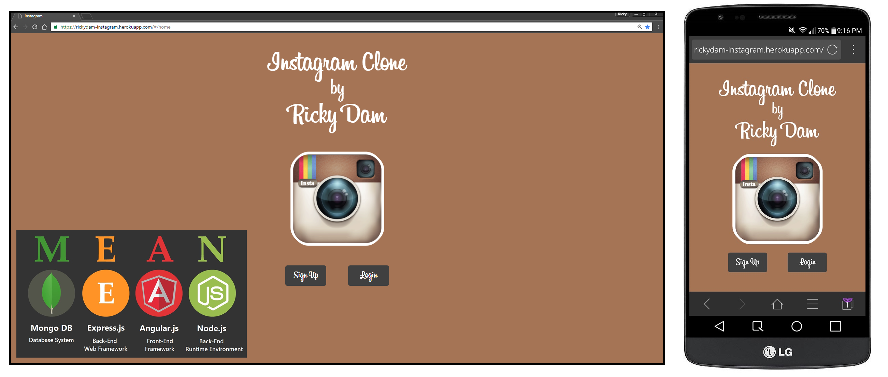
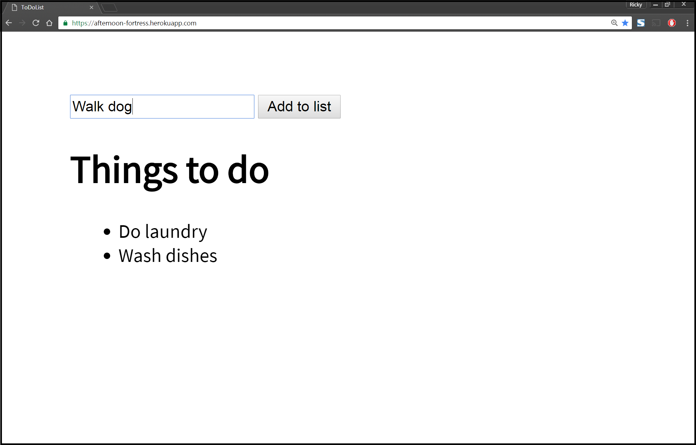
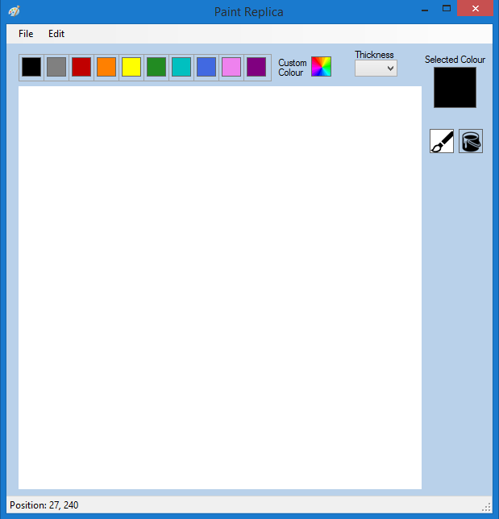
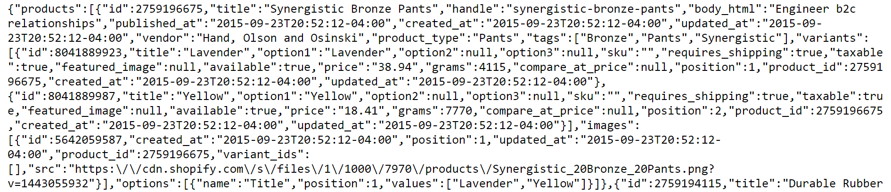
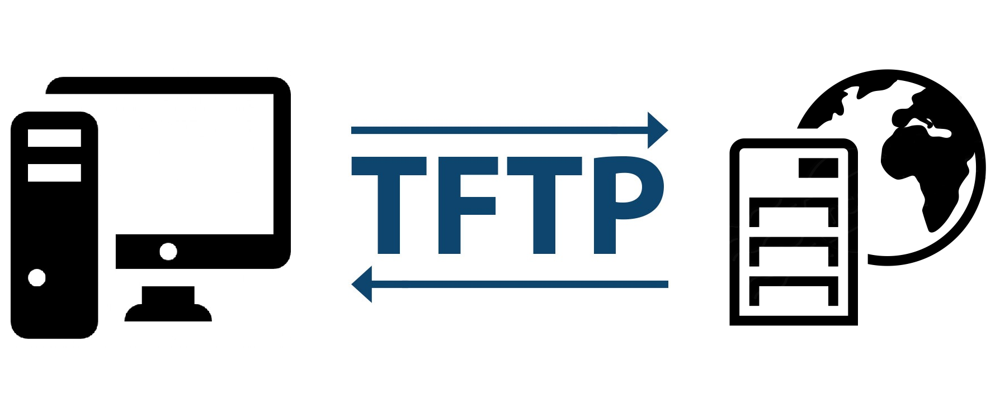
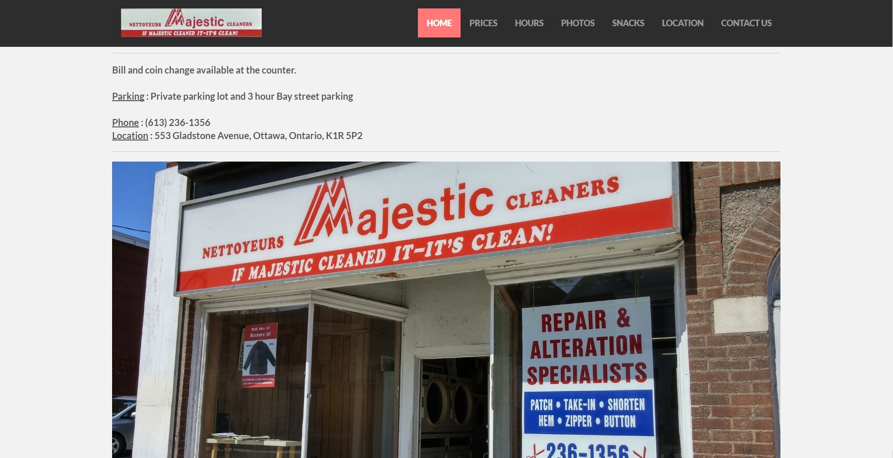
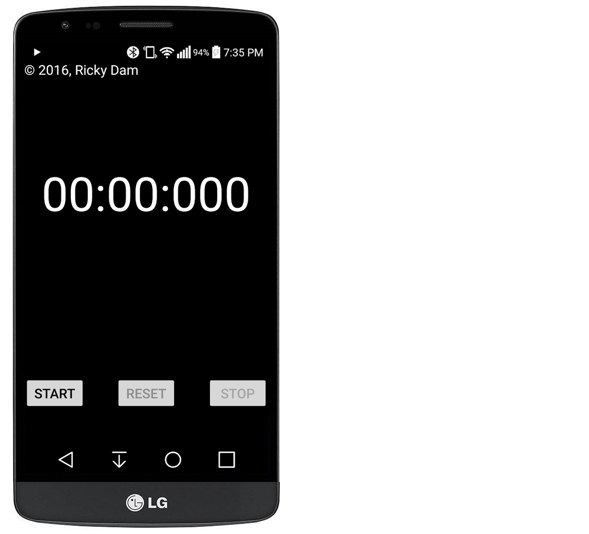
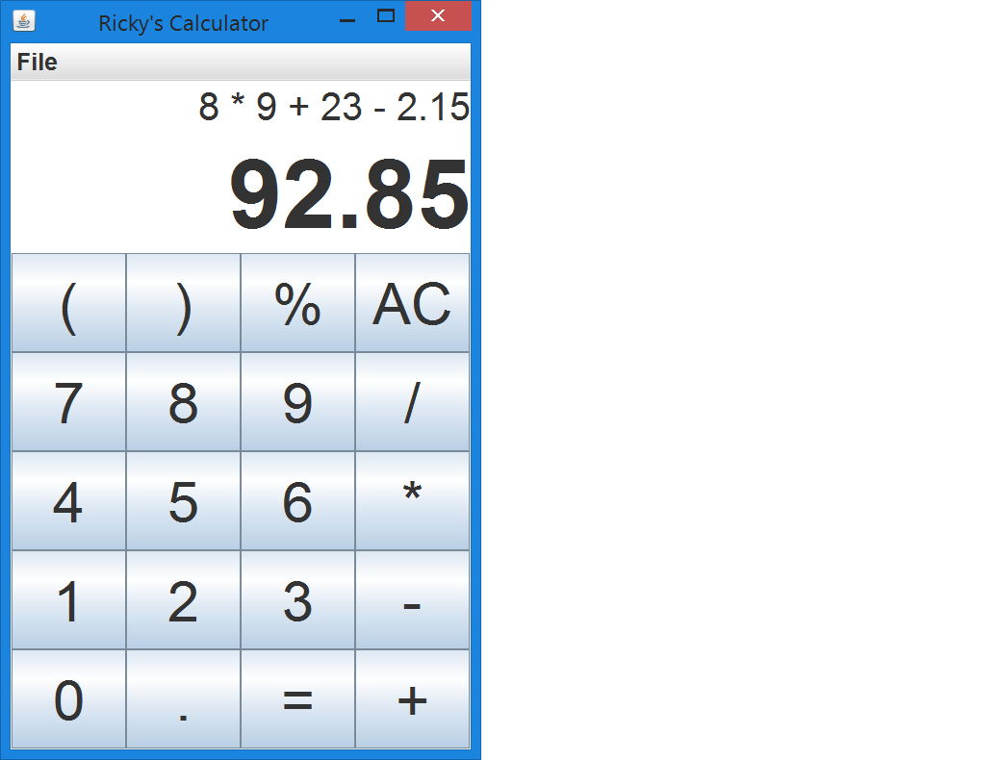
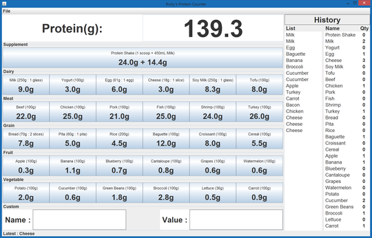

Weather API
Language: HTML, JavaScript
Development: February 2017
https://github.com/Rickydam/InstagramClone
https://rickydam-weather.herokuapp.com/
A website that finds the user's current location using the browser's geolocation feature and then displays weather information based on that location using API provided by OpenWeatherMap.
 Instagram Clone
Language: HTML, JavaScript
Development: December 2016 - Present
https://github.com/Rickydam/InstagramClone
https://rickydam-instagram.herokuapp.com/
A photo-sharing WebApp with user accounts that can store images.
Learning user authentication and password salting & hashing using SHA256.
 ToDoList
Language: HTML, JavaScript
Development: November 2016 - December 2016
https://github.com/Rickydam/ToDoList
https://rickydam-todolist.herokuapp.com/
A ToDoList WebApp which makes use of MongoDB, Express, Angular and Node.
WebApp deployed on Heroku.
 Paint Replica
Language: C#
Development: July 2016 - August 2016
https://github.com/Rickydam/Paint-Replica
Creating my own version of Microsoft Paint using Microsoft Visual Studio.
Currently only allows drawing on the canvas.
 API & JSON
Language: Java
Development: June 2016
https://github.com/Rickydam/API-JSON
Parsing a 60000 byte JSON data file and accessing specific elements such as item variants and prices.
Code written in Java and makes use of both the default JSON and the simple JSON library.
 TFTP File Transfer Application
Language: Java
Development: May 2016 - June 2016
https://github.com/mrakulous/TFTP_Application
A file transfer application implementing TFTP written in Java.
The application includes an error simulator to create errors and shows the unreliability of UDP.
 Majestic Cleaners & Laundry
Language: HTML, CSS
Development: April 2016 - Present
MajesticCleaners GitHub
http://majesticcleaners.github.io
A website made for an Ottawa Local Business called Majestic Cleaners & Laundry located at the intersection of Gladstone Avenue and Bay Street.
The website has information about prices, normal and holiday hours, photos of the inside, a map for its location and contact information.
Web Crawling Tool
Language: Python
Development: March 2016
https://github.com/Rickydam/CrawlingTool_Scrapy
A project to learn using Scrapy, a Python general purpose framework.
Extracted information from websites using APIs and stored that data on a JSON file.
 Stopwatch
Language: Java
Development: February 2016
https://github.com/Rickydam/Android-Stopwatch
My first android app. A stopwatch made using Android Studio.
Tested on an LG G3 model LG-D852 running Lollipop 5.0.1.
 Calculator
Language: Java
Development: June 2015 - October 2015
https://github.com/Rickydam/Java-Calculator
A java calculator for simple calculations.
The project makes use of the java foundation class, abstract window toolkit.
 Protein Counter
Language: Java
Development: June 2015 - July 2015
https://github.com/Rickydam/Java-ProteinCounter
A java GUI application which consists of items such as JButtons, JLabels, JPanels, JTextAreas, JMenuItems and JTextFields.
Information up-to-date as of : February 16, 2017
Copyright © Ricky Dam 2017
Copyright © Ricky Dam 2017